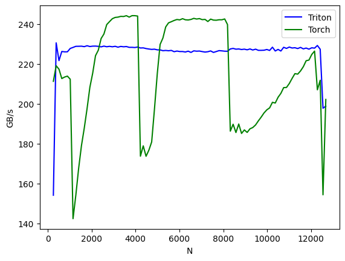
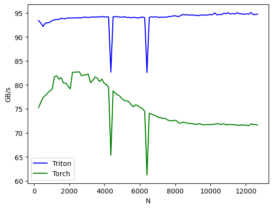

Softmax: Math, Implementation, and GPU Optimization
Background
The softmax function is a fundamental operation in deep learning that converts vectors of real numbers into probability distributions. This blog post explores the softmax function’s implementation and optimization using Triton, a programming framework for efficient GPU computations.
The softmax function transforms an input vector into a probability distribution where all elements sum to 1.
softmax - vector form
where:
- : input vector.
- : output vector, probability distribution.
Gradient of softmax (vector form)
We will compute gradients given , where is loss function, is softmax output.
Jacobian matrix
softmax is a vector function, the Jacobian matrix is the matrix of all partial derivatives:
For softmax, the derivative has two cases:
when , consider , the derivative is:
similarly, when :
Thus, -th element in Jacobian matrix will be:
where has shape and is the Kronecker delta, which is 1 if and 0 otherwise.
In matrix form, the Jacobian of the softmax is:
where:
- is the output of softmax, the shape is .
- is a diagonal matrix of , the shape is .
- is the outer product of with itself, the shape is .
gradient of
Given , we can compute using the Jacobian matrix:
where has shape , has shape , and has shape .
avoid explicit Jacobian
For the -th element of , we can decompose the computation to:
This leads to an efficient vector form:
softmax - batch form
: A batch of input vectors.
where:
- is batch size.
- is vector dimension.
forward pass
where , , .
backward pass
We have gradient with respect to softmax output:
we compute the gradient:
where has size , and has size .
where and and will be broadcasted to .
Implementation
In practice, we subtract the maximum value from each row before applying exp() to prevent numerical overflow:
real forward pass
For input :
real backward pass
we have and cached
a real example
give a real example to show how to implement softmax and its backward pass in pytorch and triton.
forwards pass is as follows:
backward pass is as follows:
native pytorch implementation
import torch
import torch.nn.functional as F
# Custom Forward Pass (Numerically Stable Softmax)
def softmax_forward(X):
X_max = torch.max(X, dim=1, keepdim=True)[0] # Shape: (N, 1)
E = torch.exp(X - X_max) # Shape: (N, d)
S = torch.sum(E, dim=1, keepdim=True) # Shape: (N, 1)
O = E / S # Shape: (N, d)
return O
# Custom Backward Pass (Gradient Calculation)
def softmax_backward(dL_dO, O):
s_grad = torch.sum(O * dL_dO, dim=1, keepdim=True) # Shape: (N, 1)
dL_dX = O * (dL_dO - s_grad) # Shape: (N, d)
return dL_dX
# Example Inputs
X = torch.tensor([[1.0, 2.0, 3.0], [1.0, 3.0, 5.0]], requires_grad=True)
dL_dO = torch.tensor([[0.1, 0.2, 0.7], [0.2, 0.3, 0.5]])
# Custom Implementation - Forward
O_custom = softmax_forward(X)
# PyTorch Implementation - Forward
O_pytorch = F.softmax(X, dim=1)
# Verify Forward Output
print("Custom Softmax Output:\n", O_custom)
print("PyTorch Softmax Output:\n", O_pytorch)
print("Forward Pass Match:", torch.allclose(O_custom, O_pytorch))
# Custom Implementation - Backward
dL_dX_custom = softmax_backward(dL_dO, O_custom)
# PyTorch Automatic Gradient Calculation
O_pytorch.backward(dL_dO) # Computes gradient using PyTorch autograd
dL_dX_pytorch = X.grad
# Verify Backward Output
print("\nCustom Gradient w.r.t Input:\n", dL_dX_custom)
print("PyTorch Gradient w.r.t Input:\n", dL_dX_pytorch)
print("Backward Pass Match:", torch.allclose(dL_dX_custom, dL_dX_pytorch))output:
Custom Softmax Output:
tensor([[0.0900, 0.2447, 0.6652],
[0.0159, 0.1173, 0.8668]], grad_fn=<DivBackward0>)
PyTorch Softmax Output:
tensor([[0.0900, 0.2447, 0.6652],
[0.0159, 0.1173, 0.8668]], grad_fn=<SoftmaxBackward0>)
Forward Pass Match: True
Custom Gradient w.r.t Input:
tensor([[-0.0381, -0.0792, 0.1173],
[-0.0043, -0.0202, 0.0245]], grad_fn=<MulBackward0>)
PyTorch Gradient w.r.t Input:
tensor([[-0.0381, -0.0792, 0.1173],
[-0.0043, -0.0202, 0.0245]])
Backward Pass Match: Truetriton implementation
from typing import Optional
import torch
import triton
import triton.language as tl
@triton.jit
def softmax_fwd_kernel(
X,
O,
D: tl.constexpr,
B: tl.constexpr
):
i_n = tl.program_id(0)
o_d = tl.arange(0, B)
m_d = o_d < D
X_max = tl.max(tl.load(X + i_n * D + o_d, mask=m_d, other=-float('inf')), 0)
E = tl.exp(tl.load(X + i_n * D + o_d, mask=m_d, other=-float('inf')) - X_max)
S = tl.sum(E, 0)
P = E / S
tl.store(O + i_n * D + o_d, P.to(O.dtype.element_ty), mask=m_d)
@triton.jit
def softmax_bwd_kernel(
O,
dO,
dX,
D: tl.constexpr,
B: tl.constexpr
):
i_n = tl.program_id(0)
o_d = tl.arange(0, B)
m_d = o_d < D
P = tl.load(O + i_n * D + o_d, mask=m_d, other=0.)
dP = tl.load(dO + i_n * D + o_d, mask=m_d, other=0.)
s_grad = tl.sum(P * dP, 0)
dX_row = P * (dP - s_grad)
tl.store(dX + i_n * D + o_d, dX_row.to(dX.dtype.element_ty), mask=m_d)
def softmax_fwd(
X: torch.Tensor,
dtype: Optional[torch.dtype] = torch.float
) -> torch.Tensor:
shape = X.shape
X = X.view(-1, X.shape[-1])
N, D = X.shape
B = triton.next_power_of_2(D)
O = torch.empty_like(X, dtype=dtype)
softmax_fwd_kernel[(N,)](
X=X,
O=O,
D=D,
B=B
)
return O.view(*shape)
def softmax_bwd(
O: torch.Tensor,
dO: torch.Tensor,
dtype: Optional[torch.dtype] = torch.float
) -> torch.Tensor:
shape = O.shape
O = O.view(-1, O.shape[-1])
dX = torch.empty_like(O, dtype=dtype)
N, D = O.shape
B = triton.next_power_of_2(D)
softmax_bwd_kernel[(N,)](
O=O,
dO=dO,
dX=dX,
D=D,
B=B
)
return dX.view(*shape)
# Test code to verify correctness
import torch.nn.functional as F
# Example inputs
X = torch.tensor([[1.0, 2.0, 3.0], [1.0, 3.0, 5.0]], requires_grad=True, device='cuda')
dP = torch.tensor([[0.1, 0.2, 0.7], [0.2, 0.3, 0.5]], device='cuda')
# Forward pass
P_triton = softmax_fwd(X)
P_torch = F.softmax(X, dim=1)
# Verify forward pass
print( "P_triton:\n", P_triton)
print( "P_torch:\n", P_torch)
print("Forward Pass Match:", torch.allclose(P_triton, P_torch))
# Backward pass
dX_triton = softmax_bwd(P_triton, dP)
P_torch.backward(dP)
dX_torch = X.grad
# Verify backward pass
print( "dX_triton:\n", dX_triton)
print( "dX_torch:\n", dX_torch)
print("Backward Pass Match:", torch.allclose(dX_triton, dX_torch))output:
P_triton:
tensor([[0.0900, 0.2447, 0.6652],
[0.0159, 0.1173, 0.8668]], device='cuda:0')
P_torch:
tensor([[0.0900, 0.2447, 0.6652],
[0.0159, 0.1173, 0.8668]], device='cuda:0', grad_fn=<SoftmaxBackward0>)
Forward Pass Match: True
dX_triton:
tensor([[-0.0381, -0.0792, 0.1173],
[-0.0043, -0.0202, 0.0245]], device='cuda:0')
dX_torch:
tensor([[-0.0381, -0.0792, 0.1173],
[-0.0043, -0.0202, 0.0245]], device='cuda:0')
Backward Pass Match: TrueResults: speed comparison
The performance comparison between PyTorch and Triton implementations reveals:


Results show
- forward pass: triton implementation is stable, while the PyTorch implementation is faster for most batch sizes but shows fluctuations for a few.
- backward pass: triton implementation outperforms the pytorch implementation across most batch sizes. (the comparison may not be entirely fair, as triton caches the output , whereas pytorch’s handling intermediate values is unclear.)
Notations
| symbol | shape | definition |
| Input vector | ||
| Output vector (probability distribution) | ||
| Scalar | Loss function | |
| Jacobian matrix | ||
| Batch of input vectors (matrix) | ||
| Batch output probabilities | ||
| Gradient w.r.t. output probabilities | ||
| Gradient w.r.t. input vectors | ||
| Summation of gradients, |
Note:
- Symbols like , , represent scalars, vectors, or matrices, where uppercase denotes batch forms.
- denotes a column vector, denotes a row vector, and denote the -th element
- denote the -th element.